ダッシュボード
百葉箱の最新記録と、ホームページ内の案内をまとめました。
{% include env3_latest.html %}🗺️ サイトマップ / ガイドマップ
xenoah.github.io のページ一覧です。行きたいところへどうぞ。
リンク末尾の は別タブで開くツール・アプリです。それ以外は通常のページとして開きます。
🔴 メイン
📝 Blog記事
-
{% include blog_articles.html %}{% for article in all_articles %}
- {{ article.title | escape }}{{ article.description | escape }}
{% endfor %}
- Blog Editorブログ記事作成用の編集ツール
- Blog RSSブログのRSSフィード
🔵 プロフィール / 環境
- VRChatについてメタバースでの活動
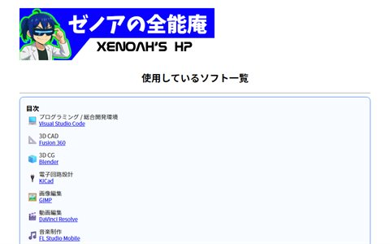
使用しているソフト一覧愛用ツール・制作環境
🟣 3Dモデル配布
- Meshcopia - 無料3Dモデル・テクスチャ無料の3Dモデル・テクスチャを検索・プレビュー・ダウンロードできる素材ライブラリ。AIエージェント向けJSONカタログも提供。
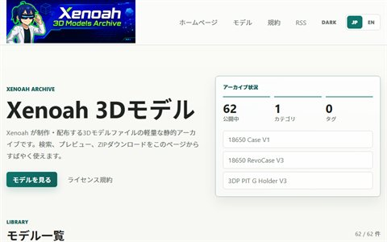
- Pocket Photogrammetry Scan写真から端末内で3D点群と部分メッシュを作る実験的PWA。PLY・GLB・OBJで書き出せる。公開サイト準備中（現在はGitHubで参照）［GitHub・ソース ↗］（別タブ）
- Photogrammetric GUI（Python）複数写真から点群・メッシュを再構成するPython製フォトグラメトリーGUIPython製デスクトップツール［GitHub・ソース ↗］（別タブ）
- CubeW - 3Dモデルビューア3Dプリント前の確認用モデルビューア。Windows・Linuxでメッシュの表示、計測、検査、修復、形式変換ができる。Windows・Linux用アプリ［GitHub・ソース ↗］（別タブ）
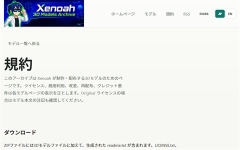
3Dモデル ライセンス規約配布モデルの利用規約
最新モデルハイライト
- 2022残暑見舞いステンシル V6最新モデルハイライト（2026-06-15時点）
- LCDtab Stand V7最新モデルハイライト
- Mawa Hanger Joint V11最新モデルハイライト
🎮 ミニゲーム
- 哲学アキネーター - 梟のミネルヴァ質問への回答から近い思想を探す哲学ゲーム。診断・推理モードと226思想の図鑑を収録。公開サイト準備中（現在はGitHubで参照）［GitHub・ソース ↗］（別タブ）
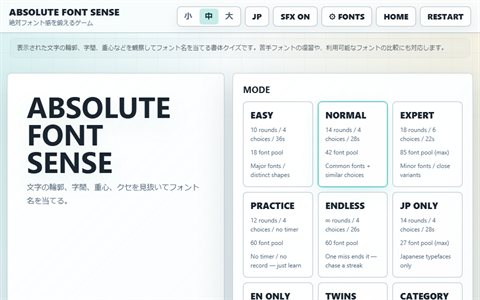
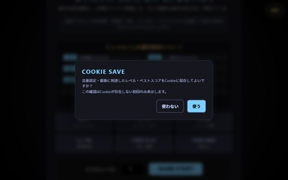
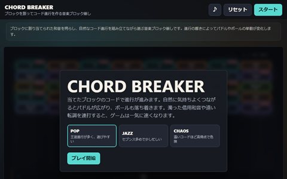
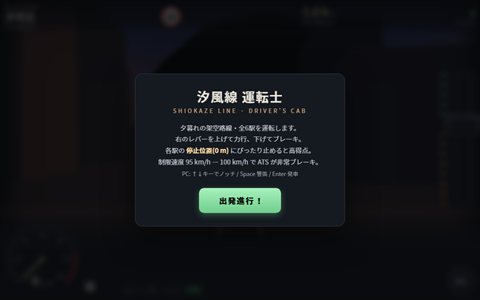
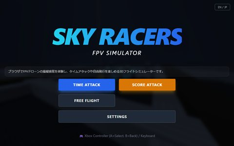
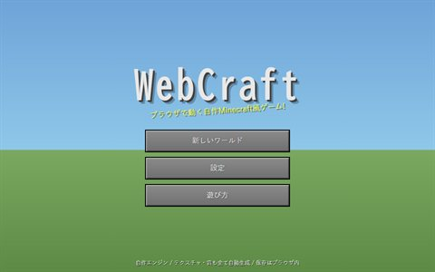
- FlightSim Rust - フライトシミュレーター実地形の上で飛行・着陸練習ができるWindows向けRust製フライトシミュレーター。リプレイ対応、開発版。Windows用アプリ［GitHub・ソース ↗］（別タブ）
- Topple Cup - 3D流体シミュレーターコップを倒し、液体がこぼれる瞬間を観察する3D流体シミュレーター。条件変更と自由視点リプレイに対応。
- DOOM for Rokid Glasses（非公式移植）Rokid AI Glasses向け非公式DOOM移植。Freedoom同梱、オフライン実行を想定したAndroidアプリ。実機未検証。Rokid Glasses用アプリ［GitHub・ソース ↗］（別タブ）
🛠️ 便利ツール
- 音割れメーカー（Clipforge）音源のゲインを上げて音割れを作るブラウザツール。波形・オシロスコープ・FFTで変化を確認し、加工した複数曲をWAVで一括ZIP保存できる。
- OTODANA（音楽アーカイブ）Xenoahの楽曲を検索・試聴できる音楽アーカイブ。ジャンル・BPMでの絞り込み、波形表示、お気に入り、ページ移動中の継続再生に対応。
- dt-cue - 精密メディアプレイヤーローカルの動画・音声を秒・フレーム・1ms刻みで確認するブラウザプレイヤー。波形・BPM・FFT表示、ホットキュー、MIDI操作に対応。
- 音界魔王城 — BEAT DUNGEON MV勇者が夕暮れの村から魔王城へ攻め込む約5分のMV。敵ごとに19ジャンルの曲へ切り替わり、曲はブラウザ内で合成。観るAUTOと、キック・スネア・ハイハット・ベースを叩くドラムマシン風の音ゲーモード（4段階）に対応。
- ЗА НАС・俺たちに — Dubstep Remixダブステップリミックスに合わせた約3分34秒のCG映像。再生・一時停止、シーク、画質変更、全画面表示に対応。
- SeekDeck - WebでDJ音源を端末内で処理する4デッキのブラウザDJアプリ。波形表示、BPM同期、ホットキュー、ループ、EQ・エフェクト、録音に対応
- PortaVek - スマホでドラム・シンセ演奏スマホでドラムとシンセを演奏できるブラウザ楽器。音作り、録音・WAV保存、プリセット保存を端末内で処理
- VoiceMeld - リアルタイム音程補正・ハーモニーマイク音声をMIDI鍵盤・コード・スケールに合わせてリアルタイム補正するブラウザ型ボイスハーモナイザー。最大6声のハーモニーと録音に対応公開サイト準備中（現在はGitHubで参照）［GitHub・ソース ↗］（別タブ）
- ChatGPT RPG Text SFX - 返信に文字送り音（Chrome拡張）ChatGPTの返信表示に合わせてRPG風の文字送り音を鳴らすChrome拡張。4音色と音量・テンポ・音程の調整に対応Chrome拡張機能［GitHub・ソース ↗］（別タブ）
- Chat Avatar - アバターチャット（Chrome拡張）ChatGPTに立ち絵・VRMアバター、読み上げ、音声認識を備えた会話画面を追加するChrome拡張Chrome拡張機能［GitHub・ソース ↗］（別タブ）
- Audio Ayatori - ノード式音声ルーティング（Windows）Windows 10/11用のノード式オーディオ・パッチベイ。マイク・スピーカー・既存の仮想ケーブルを接続し、音声の分岐・ミックス・経路ごとの音量とミュートを設定Windows用アプリ［GitHub・ソース ↗］（別タブ）
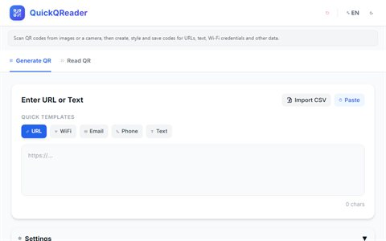
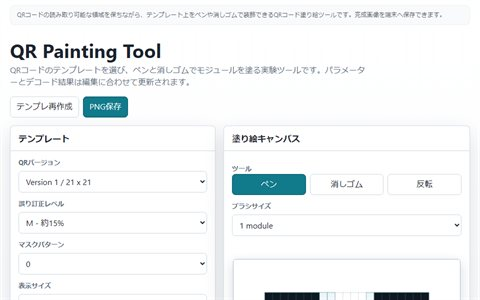
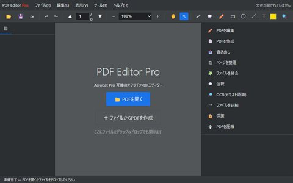
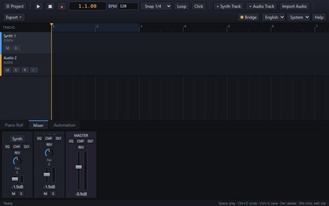
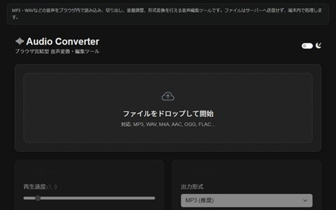
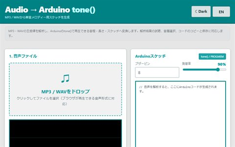
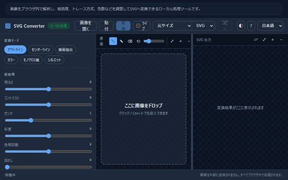
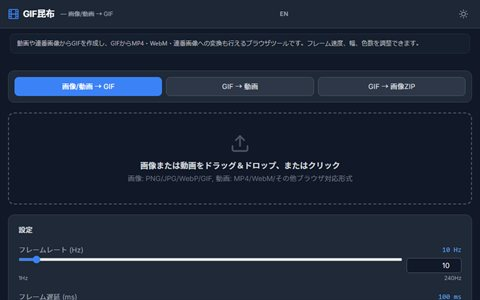
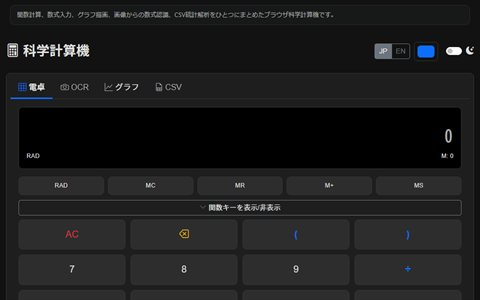
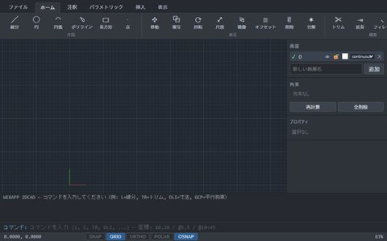
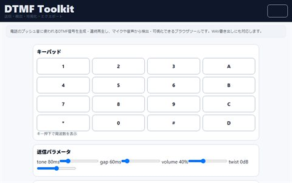
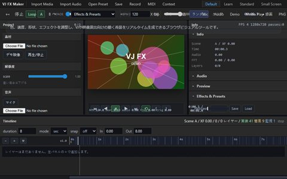
- Rokid IMU HUD - 姿勢・加速度表示Rokid Glasses単体で姿勢と加速度を表示する非公式HUD。水平儀と2軸Gメーターを搭載。Rokid Glasses用アプリ［GitHub・ソース ↗］（別タブ）
- Grok for VS Code（非公式拡張）自分のxAI APIキーでGrokをVS Codeに追加する非公式拡張。専用チャットと標準Chat/Agentに対応。VS Code拡張機能［GitHub・ソース ↗］（別タブ）
- 楽器キー（GakkiKeys）- IME楽器Androidのキーボード（IME）がそのまま楽器になるアプリ。DRUM / PIANO / SYNTHの3モードをリアルタイム合成で鳴らし、文字入力モードも備える。Android用アプリ［GitHub・ソース ↗］（別タブ）
- Imakita Industry for YouTube（Chrome拡張）YouTube動画にカーソルを合わせると要約を表示するChrome拡張。自分のGemini APIキーで使える。Chrome拡張機能［GitHub・ソース ↗］（別タブ）
- スタックチャン - Bambu Lab見守りBambu Lab P1Sの印刷状況を見守り、声と表情で知らせるCoreS3スタックチャン用ファームウェア。組み込みファームウェア［GitHub・ソース ↗］（別タブ）
- Frame Match Camera - 構図合わせカメラ見本の写真を重ねて構図を合わせるAndroidカメラ。位置・角度・大きさ・透明度を調整して撮影できる。Android用アプリ［GitHub・ソース ↗］（別タブ）
- MedjedBuilder - HTMLからAPK生成HTML・CSS・JSをAndroidアプリに仕立てるWindowsツール。開発環境なしで署名付きAPK・AABを作れる。Windows用アプリ［GitHub・ソース ↗］（別タブ）
- CoreS3 USBスペクトラム表示M5Stack CoreS3用。USB音声の波形と32バンドの周波数スペクトラムを表示するファームウェア。組み込みファームウェア［GitHub・ソース ↗］（別タブ）
- Rescue - 削除ファイル復元削除ファイルを探して復元するRust製ツール。Windows・Linux・macOSでGUI・CLI・MCPに対応。開発版。Windows・Linux・macOS用アプリ［GitHub・ソース ↗］（別タブ）
- M5Stack GPSラップタイマーサーキット走行用のM5Stack GPSラップタイマー。周回時間と速度を表示し、SDカードにCSV記録。組み込みファームウェア［GitHub・ソース ↗］（別タブ）
- Onhand LLM for AndroidAndroid端末でLLMを管理・実行するアプリ。オフラインチャットとOpenAI互換APIサーバーを搭載。Android用アプリ［GitHub・ソース ↗］（別タブ）
- CoreS3 スタックチャン × MuseCoreS3スタックチャンでMuseとの音声・画像会話を行うファームウェア。実API応答は未検証。組み込みファームウェア［GitHub・ソース ↗］（別タブ）
- EchoKeys Overlay - キー表示配信・操作説明用のWindowsキー表示ツール。押したキー、組み合わせ、履歴を透明ウィンドウに重ねて表示。Windows用アプリ［GitHub・ソース ↗］（別タブ）
- スタックチャン - 印刷お知らせ（開発版）StackChan CoreS3用の開発版ファームウェア。Bambu Lab P1Sの印刷を声と表情で知らせ、USB音声の再生・周波数表示も行う。組み込みファームウェア［GitHub・ソース ↗］（別タブ）
- Kasynel Slicer - FDMスライサーWindows向けFDM 3Dプリンタースライサー。3Dモデルを層に分け、印刷経路を確認してMarlin・Klipper用G-codeを出力。Windows用アプリ［GitHub・ソース ↗］（別タブ）
- Rokid Spectrum HUD - 音の可視化Rokid Glassesでマイク音を可視化する非公式実験アプリ。スペクトル・滝表示・波形を切替。Rokid Glasses用アプリ［GitHub・ソース ↗］（別タブ）
- Blender Agent - 自然言語操作アドオン自然言語から実行計画を作成し、オブジェクト・材質・ライトなどを操作するBlenderアドオンBlenderアドオン［GitHub・ソース ↗］（別タブ）
- Pop SE for VS Code - 操作効果音入力・保存・ビルドなどの操作に効果音を付けるVS Code拡張。音のテーマとイベント別設定に対応。VS Code拡張機能［GitHub・ソース ↗］（別タブ）
- ESP32-S3-BOX-Lite Easy ライブラリESP32-S3-BOX-Liteの画面・ボタン・音声入出力を扱うArduinoライブラリArduinoライブラリ［GitHub・ソース ↗］（別タブ）
- Penplot Gcoder - ペンプロッター用Gコード生成ベクター画像やDXFデータから、3Dプリンターをペンプロッターとして動かすGコードを生成・プレビューするツール。Python製ツール［GitHub・ソース ↗］（別タブ）
- フォルダー容量表示 for ExplorerWindowsのエクスプローラーにフォルダー容量の表示・並べ替えを追加するツール。実機未検証のプレビュー版。Windows用アプリ［GitHub・ソース ↗］（別タブ）
- スタックチャン × Codex - TTS・LLM連携LAN内TTS・ローカルLLMと連携し、口パク付きで話すStackChanファームウェア組み込みファームウェア［GitHub・ソース ↗］（別タブ）
📚 すたでぃー（学習）
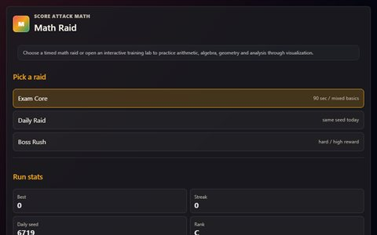
- Shrike-lite FPGA教材Shrike-lite FPGAボードの実践教材。USB接続から回路の書き込み、FPGA上のRISC-VでCを動かすまで学べる。教材（GitHubで公開）［GitHub・ソース ↗］（別タブ）
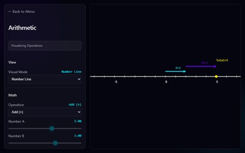
Arithmetic四則演算・基礎計算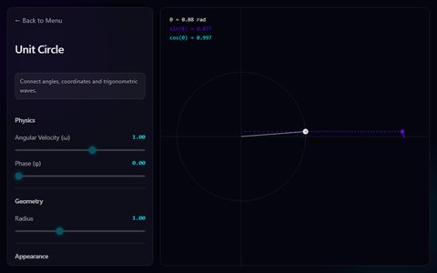
Trigonometry Unit Circle三角関数と単位円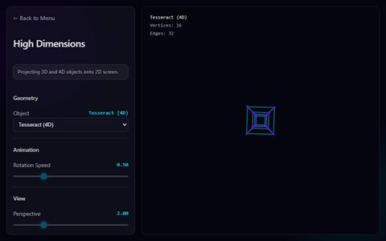
N-D Coordinates3D/4Dオブジェクトの2D投影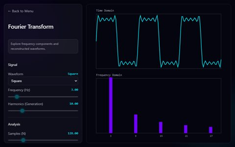
Fourierフーリエ解析の可視化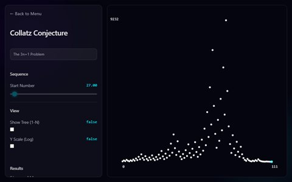
Collatzコラッツ予想の探索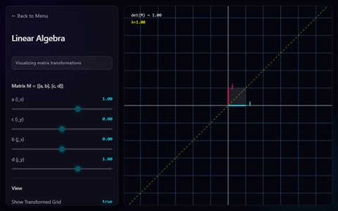
Linear Algebra線形代数の可視化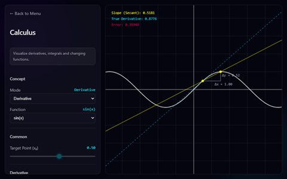
Calculus微積分の可視化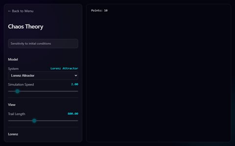
Chaosカオス系のシミュレーション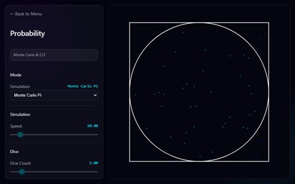
Probability確率の可視化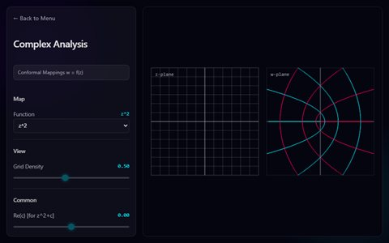
Complex Analysis複素解析の可視化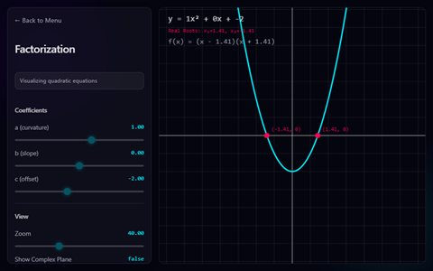
Factorization素因数分解・数の構造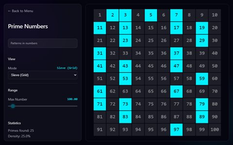
Primes素数の探索と可視化
🗄️ データベース（自分用）
- KOYO LIVE - 全国紅葉マップ全国の紅葉スポットを地図で検索。色づき状況・情報の更新日・ライブカメラへのリンクを確認できる。観測情報のない地点は未確認として表示。
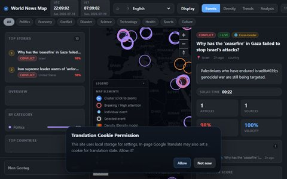
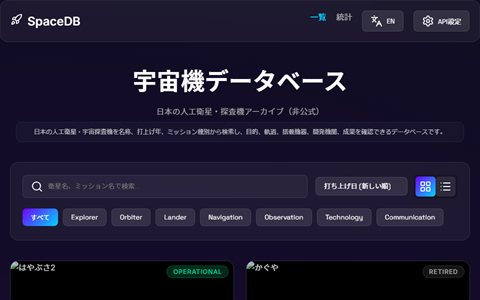
- 百葉箱 - M5Atom環境センサーM5Atom MatrixとENV IIIで気温・湿度・気圧を5x5マトリクスに表示し、10分ごとにスプレッドシートへ記録するファームウェア。LAN内のブラウザから現在値と24時間グラフを確認できる。組み込みファームウェア［GitHub・ソース ↗］（別タブ）
- Z80互換CPU基板（2SC1815）2SC1815トランジスタでZ80互換CPUを目指すKiCad設計。RTL・レジスタ・ALUの検証基板を収録。基板設計データ［GitHub・ソース ↗］（別タブ）
💬 コミュニティ
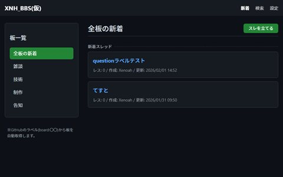
- VRChatワールド - 空港コース車両空港コースを走り、飛び、壁を駆けるVRChat車両ワールド。個人タイムアタック付きの開発版。VRChatワールド制作データ［GitHub・ソース ↗］（別タブ）
- TenTenV - WebXRソーシャルVRフレームワークブラウザでソーシャルVRを作るWebXRフレームワーク。自前サーバー、VRMアバター、音声交流、ワールド制作に対応。フレームワーク（GitHubで公開）［GitHub・ソース ↗］（別タブ）
- VRChatワールド - 樹上横丁樹上に8店舗が並ぶVRChat向け横丁の制作ソース。入口案内・時計・BGM操作を統合したプレビュー版。VRChatワールド制作データ［GitHub・ソース ↗］（別タブ）
- VRChatワールド - 技術者カフェ技術者カフェ・屋内FPV・ネオンカート場をつなぐVRChatワールド制作データ。実機プレイ未検証。VRChatワールド制作データ［GitHub・ソース ↗］（別タブ）
- VRChatワールド - Christmas Brick HouseVRChat world: a lively Christmas brick house - Meshy-generated main house with an enterable interior, plus custom snow/flame shaders for Unity and BlenderVRChatワールド制作データ［GitHub・ソース ↗］（別タブ）
- VRC Gathering - フレンド記録（Chrome拡張）VRChatで自分に見えるフレンド状態・訪問先・同席履歴を記録し、集計・CSV出力できるChrome拡張。Chrome拡張機能［GitHub・ソース ↗］（別タブ）